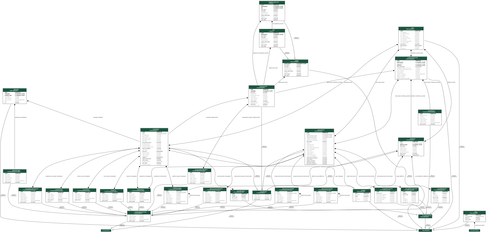
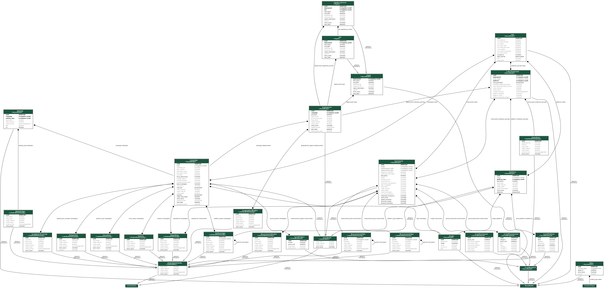

Understanding Data Models
In a django project models are the definitive source of information about your data. It contains the essential fields and behaviors of the data you’re storing. Generally, each model maps to a single database table. Here we will explain project models, capabilities, and how they relate throughout the project.
CASEI Data Models
CASEI has two groups of django models which are the Core Models and Limited Fields. The core models are Campaign, Platform, Instrument, Deployment. These models are considered the primary information in regards to ADMG’s hierarchical classification for producing contextual airborne metadata. The core models derive directly from the BaseModel or from DataModel. Then the Limited Fields are data tables for secondary airborne information. The Limited Fields also derive from following classes LimitedInfo, LimitedInfoPriority, and GcmdKeyword that all extend from the BaseModel.
One of many models used in this project is Season.
class Season(LimitedInfoPriority):
class Meta(LimitedInfo.Meta):
pass
Season is the name of the model or database table. Then inside the table are fields that store data relating to the model.
For example, if you viewed Seasons in the MI it contains two fields Season Short Name and Season Long Name. Users could input data into the fields such as “austral spring” and “southern hemisphere spring months.” Now once we save the data is stored underneath the fields defined in the Season model. This is just one example but every metadata entry inside the MI is built inside models.py file. They are all database tables containing customized fields capable of storing data for the project.
Model Inheritance
Referencing the code above, the Season class has the LimitedInfoPriority model in parenthesis next to it. What does this exactly mean? Season is a derived class thus inheriting information from the LimitedInfoPriority class (inside the parenthesis). Then the LimitedInfoPriority class ultimately inherits from another class then so on until it reaches a Base Model. This may sound confusing, but the main point is that Season is receiving its fields from a parent class called Base model through a capability called Model inheritance.
In django, Model inheritance works almost identically to the way normal class inheritance works in Python. The base class should be a subclass of django.db.models.Model. For our project the base model is BaseModel which subclasses from django.db models.
class BaseModel(models.Model):
Meta Inheritance
The project’s base model uses django’s “abstract base classes” which stores common information into a number of other models. You write your base class and put abstract=True in the Meta class. This model will then not be used to create any database table. Instead, when it is used as a base class for other models, its fields will be added to those of the child class. The Meta model is an inner class to contain metadata that are not a fields.
For example at the bottom of the BaseModel class contains a Meta class where the abstract equals true:
class BaseModel(models.Model):
uuid = models.UUIDField(default=uuid.uuid4, primary_key=True, editable=False, unique=True)
@staticmethod
def search_fields():
return ["short_name", "long_name"]
@classmethod
def search(cls, params):
search_type = params.pop("search_type", "plain")
search = params.pop("search_term", None) or params.pop('search', None)
search_fields_param = params.pop("search_fields", None)
if search_fields_param:
search_fields = search_fields_param.split(",")
else:
search_fields = cls.search_fields()
queryset = cls.objects.all()
if search:
vector = SearchVector(*search_fields)
queryset = queryset.annotate(search=vector).filter(
search=SearchQuery(search, search_type=search_type)
)
return queryset.filter(**params)
def __str__(self):
return self.short_name
class Meta:
abstract = True
The BaseModel model cannot be used as a normal Django model, since it is an abstract base class. It does not generate a database table or have an object, and cannot be instantiated or saved directly. The project’s base model gives child models the ability to produce a UUID which is generated once data is Created in the MI and methods to search for data inside the classes based upon field names.
Fields inherited from abstract base classes can be overridden with another field or value, or be removed with None. If you look at every model they inherit either from base model or another child class that derives from the base then adds more fields to the model. This inheritance provides a way to factor out common information at the Python level, while still only creating one database table per child model at the database level.
Lets take a look at the LimitedInfo model
class LimitedInfo(BaseModel):
short_name = models.CharField(max_length=256, blank=False, unique=True)
long_name = models.CharField(max_length=512, default="", blank=True)
notes_internal = models.TextField(default="", blank=True, help_text=NOTES_INTERNAL_HELP_TEXT)
notes_public = models.TextField(default="", blank=True, help_text=NOTES_PUBLIC_HELP_TEXT)
class Meta:
abstract = True
ordering = ("short_name",)
The LimitedInfo model derives from the BaseModel obtaining its Meta class but this doesn’t mean the class automatically becomes an abstract class themselves. To make an abstract base class inherit from another abstract base class, you need to explicitly set abstract=True on the child. The Meta options from the first listed class will be inherited by default unless the Meta inheritance explicitly declared.
But this cycles back to Seasons model. The Seasons directly inherits the LimitedInfo’s meta class meaning it uses its fields and the functionality of the BaseModel.
class Meta(LimitedInfo.Meta):
Previously mentioned the Seasons table on the MI’s webpage has the fields Season Short Name and Season Long Name then it has a notes internal and notes public. If you look at the LimitedInfo model again it is all the fields that are defined in that class. The core models contain
This is just one example but django’s model processes are the building blocks of the CASEI project.
Relational Databases
Clearly, the power of relational databases lies in relating tables to each other. Django offers ways to define the three most common types of database relationships: many-to-one, many-to-many, and one-to-one.
Many of the Limited Fields have a many-to-many relationship.
To define a many-to-many relationship, use ManyToManyField. ADMG uses it by including it as a class attribute of the models.
Usually ManyToManyField requires a positional argument: the class to which the model is related. For example in the Campaigns model has seasons when it took place. To connect the season model to the Campaign it is defined by the following code
seasons = models.ManyToManyField(
Season,
related_name="campaigns",
verbose_name="Season(s) of Study",
help_text="Season(s) of campaign data collection - Include all that are appropriate",
)
Refer to the visual below to view the data models and how they connect by fields.
 
